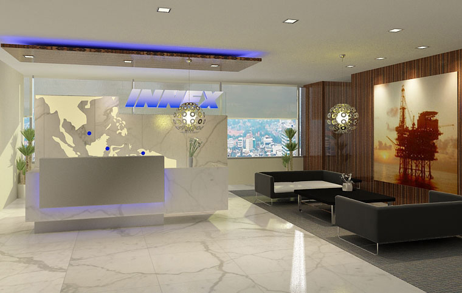
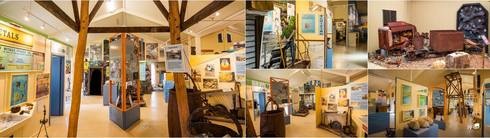

Presentation
The mini theatre is a great idea, however that along does not raise the current vistor's center much above
the status of underwhelming. It feels like a sterile offering that a typical corporate enity would come up with to
showcase their business. It feels too much like this:

If there was ever a steam train service and goldfields loop, with Maryborough as the gateway, then the vistor's center should be showcasing what awaits them across the goldfields. With some smaples in the form of a mini museum.
This visitor's center is done really well. It would certainly draw me in for 15 minutes at least to drink in
all the information and objects on display. Maryborough's visitor center should be presented in a similar way. There
is no need for any structure alterations. All it needs is some appropriate display cases, shelves and racks etc.

Greeting Tourists
The vistor center staff should greet the tourists on the platform when the steam service arrives, direct them to where they need to go to meet up with tour guides and stage coach rides and make themselves availabe to proactively answer their questions etc.